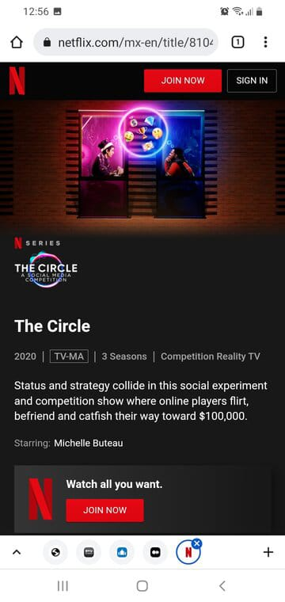

Visual Hierarchy
Slack Technologies
- slack.com
The visual hierarchy design is well used in this page, because they want that the people notice that "Slack is your digital HQ", so they use a large font size for it. Next, they invite us to the action with the purple button called "GET SLACK FOR ANDROID". Finally the less important things are below of them.
Hick's Law
Netflix
- netflix.com
- 
This webpage uses Hick's Law in its home page, despite they have a lot of series and movies to offer they only shows a serie that is having a high rate. Also, they only show the options to Join or Sign in.
Fitt's Law
GitHub
- github.com
This web site is a good exemplar about the Fitt's Law use, because it shows the buttons with an appropiate size, so the user can navigate on them easily and without error.